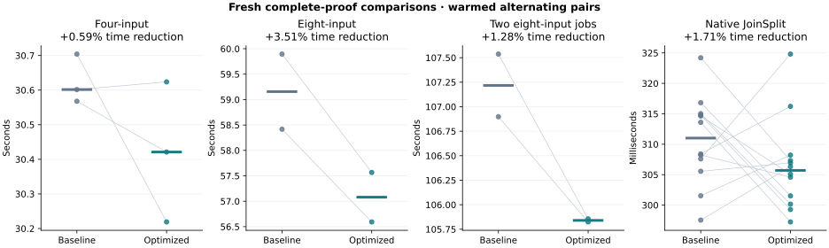
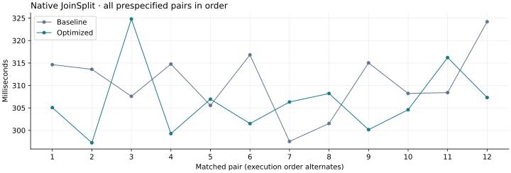

21 October 2026 · Seventh optimization pass · Tesla V100-PCIE-32GB
This run compares the previous field_carry release with extension_dot.
Both use fresh proofs, the same fixtures and the same independent CPU verifier binaries.
Earlier campaign evidence remains intact.
Kept the V100 cubic dot-product reduction. Warmed median latency fell 0.59% for four inputs, 3.51% for eight inputs, and 1.28% for two concurrent eight-input jobs; six of seven aggregation pairs improved. Native results were mixed: a 1.71% lower pooled median with seven of twelve paired wins. Sampled GPU peaks increased by 460 MiB for a single eight-input job and 920 MiB for the concurrent cohort; all unchanged resource budgets passed. These are limited fixed-fixture V100 measurements, not general production qualification.
Values are seconds. Positive reductions indicate lower latency. Both pooled-median ratios and within-pair reductions are reported; all samples are retained.
| Workload | Baseline median | Optimized median | Pooled reduction | Median paired reduction | Paired wins |
|---|---|---|---|---|---|
| Four-input aggregation | 30.601513 | 30.420979 | +0.59% | +0.48% | 2/3 |
| Eight-input aggregation | 59.156003 | 57.079258 | +3.51% | +3.51% | 2/2 |
| Two concurrent eight-input jobs | 107.217330 | 105.840166 | +1.28% | +1.28% | 2/2 |
| Native JoinSplit | 0.311007 | 0.305699 | +1.71% | +2.11% | 7/12 |

The native sequence is shown separately to make timing variation visible.

Cubic multiplication modulo X³ − X − 1 uses the three-dot-product identity also used by Plonky3. Each dot product now sums three full 128-bit products before one modular reduction, instead of reducing every product separately. The implementation preserves a top carry of 0, 1 or 2 beyond bit 127.
For B = 2³² and p = B² − B + 1, B⁴ ≡ −B modulo p. A sum represented as low + high·B² + top·B⁴ therefore reduces to low − ((high ≫ 32) + top·B) + (uint)high·(B − 1). The negative correction is smaller than 3B. The borrow fold and final carry fold each fit in one correction, as documented in the arithmetic-bound evidence. All six inputs may be arbitrary u64 representatives.
The helper is enabled by the existing V100 arithmetic gate: NVIDIA vendor 0x10de, V100 device name, and compute capability 7.0. Every condition-code chain remains inside one assembly block, following the PTX carry semantics. Other devices retain the exact original portable cubic implementation. Quadratic multiplication is unchanged.
src/gpu/arithmetic_tests.rssrc/block_v2/gpu_hash/engine/extension_multiply.clProof parameters, randomness, proof encoding, verifier behavior, NTT scheduling, resource admission and the 250 W power cap remain the same. Metal is separate.
Kernel-event totals may overlap and must not be added to infer end-to-end latency. No profile events were dropped. The row-hash kernel reports zero private bytes for both builds. The specialized cubic quotient kernel reports 432 private bytes per thread for the baseline and 280 for the candidate; this is a compiler resource report, not a sampled VRAM measurement.
| Workload | Kernel | Baseline seconds | Optimized seconds | Reduction |
|---|---|---|---|---|
| Four-input aggregation | lde_absorb | 4.851201 | 4.851414 | -0.00% |
| Four-input aggregation | lde_ntt | 5.633012 | 5.639121 | -0.11% |
| Four-input aggregation | device_extension_quotient | 2.231200 | 2.051069 | +8.07% |
| Native JoinSplit | lde_absorb | 0.013348 | 0.013438 | -0.68% |
| Native JoinSplit | lde_ntt | 0.010052 | 0.010008 | +0.44% |
| Native JoinSplit | device_extension_quotient | 0.001136 | 0.001141 | -0.46% |
Values are GiB, taking the highest sampled peak across the qualification runs. The original host, device-allocation and whole-device budgets remain in force.
| Workload | Baseline GPU | Optimized GPU | Baseline host RSS | Optimized host RSS |
|---|---|---|---|---|
| Eight-input aggregation | 8.512 | 8.961 | 1.227 | 1.239 |
| Two concurrent eight-input jobs | 17.020 | 17.918 | 2.441 | 2.453 |
45 targeted tests passed, plus CPU-only and GPU-without-tuning compilation. Two new permanent tests check 86,661 quadratic products, 107,786 cubic products and 143,747 three-product sums against independent integer oracles, on both portable and selected paths. Polynomial long division supplies the extension oracle. Cases include full-u64 inputs, noncanonical representatives, limb boundaries, isolated coefficients, and all top carries. Existing field, inverse, matrix, selector, transform, witness and native proof checks also pass.
Both isolated screens independently check the extension formulas and compare every output of the timed kernels. The fixed-degree compute-heavy cubic screen showed 35–37% lower event times for delayed reduction; this component result is distinct from the full-proof measurements above. Single-product and short-launch results are mixed or limited by launch and memory costs. The selected fixed-degree kernels report zero private bytes.
The benchmark ledger contains 60 independently CPU-audited outputs representing 192 fresh benchmark proofs. Output hashes are unique, every required GPU stage is covered, and native public-input tampering is rejected. All 691 selected source-file hashes match release and test builds.
| Targeted check | Passed |
|---|---|
| field-device-guard | 1 |
| scalar-absorb-oracle | 1 |
| parameter-guard | 1 |
| tuning-policy | 3 |
| witness-host | 6 |
| witness-budget | 1 |
| ntt-local-memory | 5 |
| ntt-and-tuning-gpu-oracles | 4 |
| arithmetic-oracles | 10 |
| dft-and-commitment-oracles | 6 |
| witness-parity-reference | 2 |
| witness-parity-fusion | 2 |
| witness-rejection | 2 |
| native-wallet-entrypoints | 1 |
Machine-readable evidence and all measurements · Incremental source patch · Source, controllers and raw evidence archive